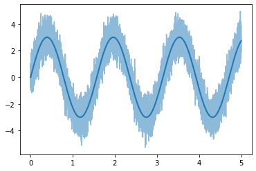

import itstgcn_intro
import torch
import numpy as np
import pandas as pd
import random
from plotnine import *
import pickle
import plotly.express as px
import plotly.graph_objects as go
import matplotlib.pyplot as pltimport
def load_data(fname):
with open(fname, 'rb') as outfile:
data_dict = pickle.load(outfile)
return data_dict
def save_data(data_dict,fname):
with open(fname,'wb') as outfile:
pickle.dump(data_dict,outfile)Data
T = 10000
t = np.arange(T)/T * 5np.random.seed(111)
node0 = 2*np.sin(4*t)+np.sin(4*t)
eps_node0 = np.random.normal(size=T)*0.7np.random.seed(22)
node1 = node0.copy()
# for i in range(2,T):
# y[i] = 0.7*x[i-1] - 0.25*x[i-2] + 0.5*np.cos(0.1*t[i])
eps_node1 = np.random.normal(size=T)*0.7plt.plot(t,node0,color='C0',lw=2)
plt.plot(t,node0+eps_node0,alpha=0.5,color='C0')
plt.plot(t,node1,color='C1',lw=2)
plt.plot(t,node1+eps_node1,alpha=0.5,color='C1')
_node_ids = {'node0':0, 'node1':1}
_FX1 = np.stack([node0+eps_node0,node1+eps_node1],axis=1).tolist()
_edges1 = torch.tensor([[0,1]]).tolist()
data_dict1 = {'edges':_edges1, 'node_ids':_node_ids, 'FX':_FX1}
data1 = pd.DataFrame({'node0':node0,'node1':node1,'node0_noise':eps_node0,'node1_noise':eps_node1,'node0_observed':node0+eps_node0,'node1_observed':node1+eps_node1})
# save_data(data_dict1, './data/new_toy_dict.pkl')
# save_data(data1, './data/new_toy_data.csv')Class
class Intro:
def __init__(self, data, data_dict, lags, mindex, mtype, name):
self.loader = itstgcn_intro.DatasetLoader(data_dict)
self.nodes = len(data_dict['edges'][0])
self.T = len(data_dict['FX'])
self.lags=lags
self.mindex=mindex
self.mtype=mtype
self.name = name
self.observed_values = []
for node in range(self.nodes):
self.observed_values.append({
f'node{node}': data[f'node{node}'],
f'node{node}_noise': data[f'node{node}_noise'],
f'node{node}_observed': data[f'node{node}_observed']
})
self.dataset = self.loader.get_dataset(lags=self.lags)
self.dataset_miss = itstgcn_intro.miss(self.dataset,self.mindex,mtype=self.mtype)
self.dataset_padded = itstgcn_intro.padding(self.dataset_miss,interpolation_method='linear')
def lrnr(self, filters, epoch=5):
self.epoch = epoch
if self.name == 'Classic' :
self.lrnr = itstgcn_intro.StgcnLearner(self.dataset_padded)
elif self.name == 'Proposed' :
self.lrnr = itstgcn_intro.ITStgcnLearner(self.dataset_padded)
self.lrnr.learn(filters, epoch)
def record_yhat(self):
results = self.lrnr.result_dict
dfs_by_node = {}
for node in range(0, self.nodes):
df_node = pd.DataFrame()
df_node[f'node{node}_underline'] = self.observed_values[node][f'node{node}'][:-self.lags]
df_node[f'node{node}_noise'] = self.observed_values[node][f'node{node}_noise'][:-self.lags]
df_node[f'node{node}_observed'] = self.observed_values[node][f'node{node}_observed'][:-self.lags]
df_node[f'node{node}_missing'] = torch.tensor(self.dataset_miss.targets).reshape(-1,2)[:,node]
df_node[f'node{node}_padding'] = torch.tensor(self.dataset_padded.targets).reshape(-1,2)[:,node]
for epoch in range(self.epoch):
epoch_key = f'epoch={epoch},node={node}'
df_node[epoch_key] = [
str(results[f'epoch={epoch},time={time_step}'].detach()[node]).replace("tensor(", "").strip().replace(")", "").strip()
for time_step in range(0, self.T-self.lags)]
if self.name == "Proposed" :
df_node[f'epoch={epoch},node{node},trim'] = self.lrnr.trimed[f'epoch={epoch}'][:,node][:-self.lags]
df_node[f'epoch={epoch},node{node},threshed'] = self.lrnr.threshed[f'epoch={epoch}'][:,node][:-self.lags]**2
df_node[f'epoch={epoch},node{node},power'] = self.lrnr.power[f'epoch={epoch}'][:,node][:-self.lags]**2
else:
pass
df_node = df_node.reset_index()
df_node.rename(columns={'index': 'Time'}, inplace=True)
dfs_by_node[node] = df_node
self.df = dfs_by_node
def custom_melt_function(self):
melted_df = {}
for node in range(self.nodes):
melted_table = self.df[node].melt(id_vars=['Time'], value_name='value', ignore_index=False)
split_cols = melted_table['variable'].str.split(',', expand=True)
melted_table = pd.concat([melted_table, split_cols], axis=1)
melted_table = melted_table.rename(columns={0: 'first_part', 1: 'second_part', 2: 'third_part'})
melted_table['value'] = pd.to_numeric(melted_table['value'], errors='coerce')
melted_df[node] = melted_table
self.melted_rst = melted_df
def create_time_series_plot(self):
figs = []
for node in range(self.nodes):
if self.name == 'Classic':
filtered_df = self.melted_rst[node].query(f'first_part not in ["node{node}_observed", "node{node}_underline", "node{node}_noise", "node{node}_missing", "node{node}_padding"]')
if self.name == 'Proposed':
filtered_df = self.melted_rst[node].query(f'first_part not in ["node{node}_observed", "node{node}_underline", "node{node}_noise", "node{node}_missing", "node{node}_padding"] and third_part not in ["trim","power","threshed"]')
trim_df = self.melted_rst[node].query(f'third_part in ["trim"]')
threshed_df = self.melted_rst[node].query(f'third_part in ["threshed"]')
power_df = self.melted_rst[node].query(f'third_part in ["power"]')
fig1 = px.line(trim_df,
x=trim_df['Time'],
y=trim_df['value'],
animation_frame=trim_df['first_part'],
range_x=[0, self.T],
range_y=[np.min(trim_df['value'])-10, np.max(trim_df['value'])+10],
width=2000, height=1200,
title = "Trimed Vlues")
fig1.layout['xaxis'].title = 'Time'
fig1.layout['yaxis'].title = 'Values'
fig2 = px.line(threshed_df,
x=threshed_df['Time'],
y=threshed_df['value'],
animation_frame=threshed_df['first_part'],
range_x=[0, self.T],
range_y=[np.min(threshed_df['value'])-10, np.max(threshed_df['value'])+10 ],
width=2000, height=1200,
title = "Threshed Vlues")
fig2.layout['xaxis'].title = 'Time'
fig2.layout['yaxis'].title = 'Values'
fig3 = px.line(power_df,
x=power_df['Time'],
y=power_df['value'],
animation_frame=power_df['first_part'],
range_x=[0, self.T],
range_y=[np.min(power_df['value'])-10, np.max(power_df['value'])+10],
width=2000, height=1200,
title = "Power")
fig3.layout['xaxis'].title = 'Time'
fig3.layout['yaxis'].title = 'Values'
figs.append(fig1)
figs.append(fig2)
figs.append(fig3)
fig = px.line(filtered_df,
x=filtered_df['Time'],
y=filtered_df['value'],
animation_frame=filtered_df['first_part'],
range_x=[0, self.T], range_y=[np.min(filtered_df['value'])-10,np.max(filtered_df['value'])+10],
width=2000, height=1200,
title = f"yhat by each epoch on {node}")
# fig.add_scatter(x=self.melted_rst[node].query(f'first_part=="node{node}_underline"')['Time'],
# y=self.melted_rst[node].query(f'first_part=="node{node}_underline"')['value'],
# marker=dict(color="grey", size=1, opacity=0.8),
# name="Underline Function")
# fig.add_scatter(x=self.melted_rst[node].query(f'first_part=="node{node}_noise"')['Time'],
# y=self.melted_rst[node].query(f'first_part=="node{node}_noise"')['value'],
# marker=dict(color="LightSlateGray", size=1, opacity=0.8),
# name="Noise")
fig.add_scatter(x=self.melted_rst[node].query(f'first_part=="node{node}_observed"')['Time'],
y=self.melted_rst[node].query(f'first_part=="node{node}_observed"')['value'],
marker=dict(color="LightSlateGray", size=1, opacity=0.8),
name="Observed Values")
# fig.add_scatter(x=self.melted_rst[node].query(f'first_part=="node{node}_missing"')['Time'],
# y=self.melted_rst[node].query(f'first_part=="node{node}_missing"')['value'],
# marker=dict(color="red", size=10, opacity=0.8),
# name="with Missing values",
# mode='markers')
# fig.add_scatter(x=self.melted_rst[node].query(f'first_part=="node{node}_padding"')['Time'],
# y=self.melted_rst[node].query(f'first_part=="node{node}_padding"')['value'],
# marker=dict(color="lightblue", size=1, opacity=0.8),
# name="Interpolation",
# mode='lines')
fig.layout['sliders'][0]['currentvalue'] = {'prefix': ''}
fig.layout['xaxis'].title = 'Time'
fig.layout['yaxis'].title = 'Values'
figs.append(fig)
self.fig = figsData load
# data_dict1 = itstgcn_intro.load_data('./data/new_toy_dict.pkl')
# data1 = itstgcn_intro.load_data('./data/new_toy_data.csv')
T = len(data_dict1['FX'])
# mindex = [random.sample(range(0, T), int(T*0.8)),[np.array(list(range(750,1250)))]]
mindex = []Learner
test_Classic = Intro(data=data1, data_dict=data_dict1, lags=4, mindex=mindex, mtype='block',name = 'Classic')/home/csy/Dropbox/ITTGNN_blog/posts/2_research/itstgcn_intro/utils.py:71: UserWarning: Creating a tensor from a list of numpy.ndarrays is extremely slow. Please consider converting the list to a single numpy.ndarray with numpy.array() before converting to a tensor. (Triggered internally at /opt/conda/conda-bld/pytorch_1682343998658/work/torch/csrc/utils/tensor_new.cpp:245.)test_Classic.lrnr(filters=4,epoch=5)5/5test_Proposed = Intro(data=data1, data_dict=data_dict1, lags=4, mindex=mindex, mtype='block',name = 'Proposed')test_Proposed.lrnr(filters=4,epoch=5)yhat
test_Classic.record_yhat()test_Proposed.trtest_Proposed.record_yhat()test_Classic.custom_melt_function()test_Proposed.custom_melt_function()animation
test_Classic.create_time_series_plot()test_Proposed.create_time_series_plot()test_Classic.fig[0]test_Proposed.fig[3]